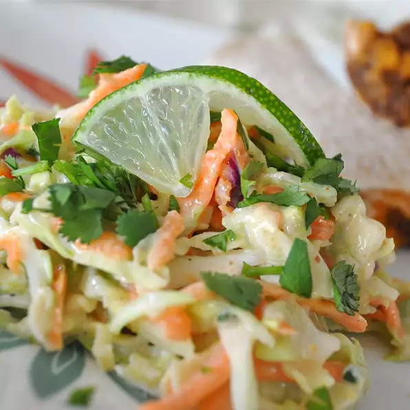

Texas Coleslaw

Description
Coleslaw is a cold salad traditionally made from sliced or chopped raw cabbage mixed with a dressing made with mayonnaise or vinegar. It often includes other seasonings and ingredients, such as onions, carrots, or apples.
Ingredients
- 1 cup mayonnaise
- 1 tablespoon lime juice
- 1 tablespoon ground cumin
- 1 teaspoon cayenne pepper
- 1 teaspoon salt
- 1 teaspoon ground black pepper
- 1 medium head green cabbage, rinsed and very thinly sliced
- 1 large carrot, shredded
- 2 green onions, sliced
- 2 radishes, sliced
Steps
- In a large bowl, whisk together the mayonnaise, lime juice, cumin, salt and pepper.
- Add the cabbage, carrot, green onions and radishes and stir until well-combined.
- Chill at least an hour before serving.